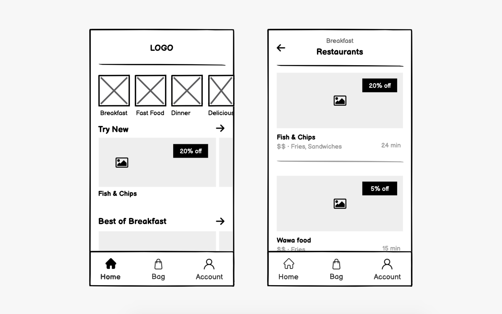
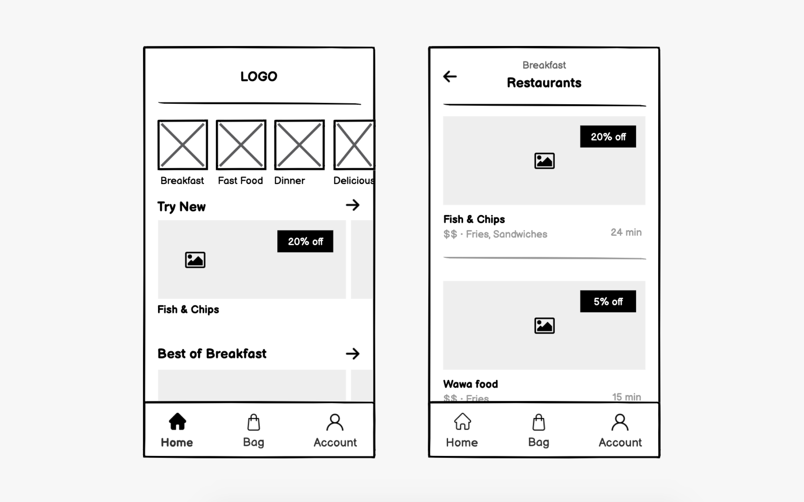

Site Name
The Gourmet Table: A name that reflects a luxurious and inviting dining experience, perfect for food lovers seeking premium dishes.
Site Purpose
The purpose of this site is to showcase the restaurant’s menu, allow users to make reservations, and provide information about special offers and events.
Scenarios
- What are today’s specials on the menu?
- How can I make a reservation for a group of 10 people?
Color Schema
Primary Color: Deep Burgundy (#800020) for the header, footer, and accents to evoke luxury and warmth.
Secondary Color: Cream (#FFFDD0) for the background to provide a clean and inviting feel.
Typography
Fonts:
- Playfair Display: Used for headings to add elegance.
- Roboto: Used for body text for readability.
Wireframes
Below are the wireframe sketches for mobile and desktop views:
 
